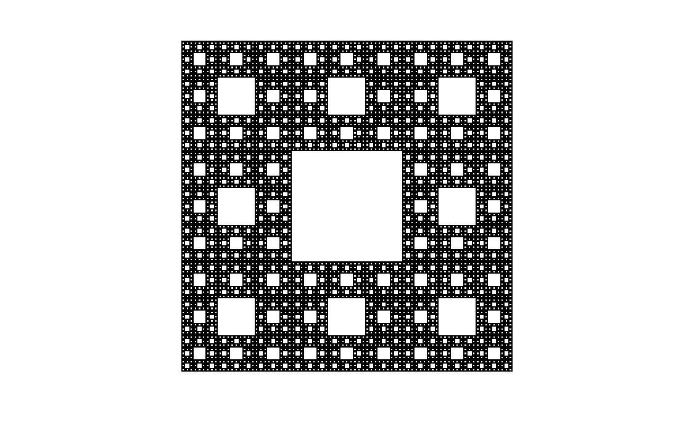

Fractal gallery
Sierpinski Carpet
A square that loses its centers and gains a world of windows.
Divide a square into a three-by-three grid and remove the middle. Eight squares survive. Repeat the same choice inside every survivor and a rigid checkerboard becomes an intricate hierarchy of passages, frames, and rooms within rooms.

What to try first
Begin at one iteration with a square with a single missing hole.
Continue slowly. At every step, each surviving square makes the same choice and opens its own central window.
Zoom toward the edge of any hole. Increase the iterations and the apparent wall becomes another complete neighborhood of holes.
Almost a surface, but never filled
Each iteration keeps only \(8/9\) of the previous area, so the remaining area tends to zero after infinitely many steps. Yet the carpet reaches through the plane much more densely than an ordinary curve. Fractal dimension gives that tension a number.
Visit Tools > Dimension calculator, select Sierpinski Carpet, and calculate its box-counting dimension. The calculator asks how many boxes are needed to touch the carpet as the measuring grid becomes finer.
Eight copies at one-third scale
The carpet contains eight copies of itself, each scaled by \(1/3\). Its similarity dimension obeys \(8(1/3)^D=1\), so \(D=\log(8)/\log(3)\approx1.893\). A finite image cannot contain infinitely many levels, so the box-counting result is an estimate; resolution, iteration depth, and chosen box sizes all influence how closely it approaches the theoretical value.
How wxChaos constructs it
This is a geometric renderer. It begins with one filled square and draws the recursively removed centers as rectangle primitives. When you zoom deeply, wxChaos skips branches outside the viewport and continues the construction only where it can contribute visible detail.